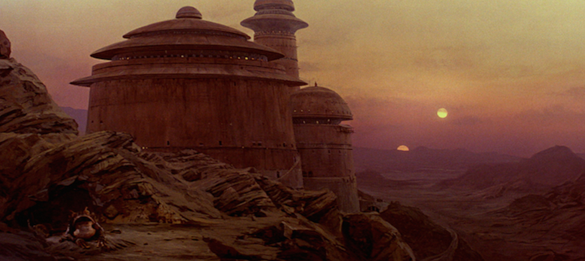

Tatooine era um planeta desértico localizado nos Territórios da Orla Exterior. O planeta fazia parte de um sistema solar binário. Devido à falta de água superficial, muitos residentes do planeta drenavam água da atmosfera através de fazendas de umidade
Divinity's Reach é o último bastião da glória humana. Paredes de calcário branco, grandes estátuas, santuários para deuses— O Alcance da Divindade é o mundo como já foi, como será novamente. Uma cidade hierárquica é disposta como uma grande roda, com as paredes externas altas como sua borda e seis paredes internas irradiando como raios do centro em seu centro.

Minas Tirith, é uma cidade fictícia e castelo da obra de J.R.R Tolkien. Tornou-se a capital de Gondor na segunda metade da Terceira Era
p>